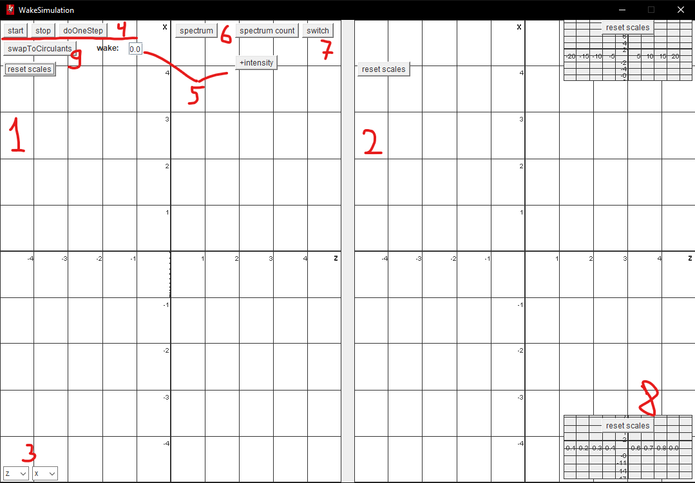

All the preferences are stored in the 'Config' class. Here you can find:
- 1) What to do
- 2) How the simulation should proceed
- 3) The main necessary lattice parameters
'countOnlyOneIntensity' - if false, draw the spectrum for the given intensity; if true, calculate spectrum dependency on the beam intensity and save to the file.
'lower' and 'upper' borders define the range where the program should find frequencies.
'isMomentHistorySoloParticle' - if false, the spectrum is calculated for the dipole momentum; if true - for a single particle.
'isFullBeamBeam' - if false, the deflection of the first-interacted pair of particles does not act on the second; if true - it does.
'isBeamBeamInSpace' - if false, there is no magnetic fields in the interaction region; if true, the dipole magnetic field is equal to the averaged magnetic field by the turnover.
'updateStep' - if choose 'beamBeamStep', each step will be one pair beam-beam interaction, instead of one turnover.
'L' - not compensated solenoids rotation.
'alfaDivSigX' - arbitrary parameter for the crossing angle.
The working field of the program:  1, 2. two beams. The macro particles are displayed here. You can zoom in and out.
3. switches for the axes.
4. simulation control. Allows to view one-turn changes.
5. wake and intensity control elements.
6. spectrum: draw a spectrum based on the currently aquired data; spectrum count: calculate spectrum based on the config choice.
7. switch spectrum mode - log or not.
8. spectrum panel. You can resize it as well as zoom in and out.
9. swap to the second mode of the program - it is not finished and not usefil.
The resulting spectrum data can be found in the 'out' folder. The program can plot the spectrum dependency, but it is more convenient to use 3rd party software like Wolfram Mathematica.